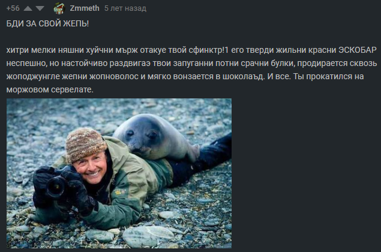
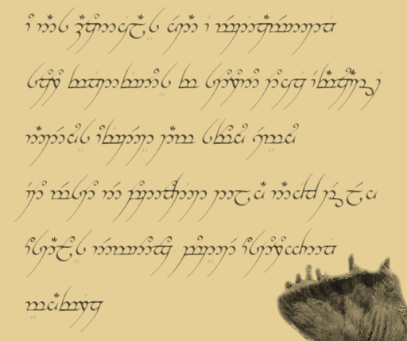

|  |
Люди, пострадавшие от убийственных нападок тюленей
и осведомляют обычных людей об их опасности |
|
Если у вас когда-либо возникали подобные мысли, то вы, возможно, всегда были правы. Последние исследования британских учёных выяснили, что тюлени на самом деле являются секретными агентами инопланетян с далёкой планеты Чрнгртят и они собираются захватить нашу планету. Тысячи людей уже пострадало от неосведомлённости и неочевидной опасности этих злых комочков ярости. |
| Возможно, вы задались вопросом: "что за дичь я только что прочитал?", однако вы не одни - миллионы людей до сих пор заблуждается об истинной природе тюленей, по ошибке считая их милыми. Всё это, конечно же, происходит исключительно из-за промывки мозгов и из-за особых феромонов, которые (подобно коровабактериям) передаются через интернет. Однако не будьте обмануты - всё это лишь ложь, распространённая самыми зомбированными участниками их движения, которое его участники завуалированно называют "Спасите тюленей". Под этим безобидным названием кроется самая опасная группировка, которая представляет опасность для всего человечества. В этой небольшой статье мы расскажем о том, почему тюлени являются такими опасными. |
|
На этом изображении вы можете видеть типичного представителя мохнатых убийц. |
|
|  |
Обнаруженный документ |
|
В начале нашей статьи мы упоминали британских учёных, которые выяснили истинную природу так называемых тюленей. Они нашли документ, доказывающий инопланетное их происхождение. Этот документ был написан тюленьским шпионом, готовым к эвакуации с нашей планеты. Военные быстро приблизились к месту, указанному на обратной стороне документа, и обнаружили там нескольких тюленей, допрос которых продолжается. |
Как же защититься от губительного влияния тюленей? От него (как от феромонов, так и от их "визуальной" части) можно избавиться, если носить
этот несложный элемент одежды. Пойдет даже самодельная версия, ведь любые средства хороши в борьбе с захватчиком.
Если же вы хотите ТОЧНО защититься от зомбирования и, впоследстии, вечного рабства и служения тюленям, то вы можете как вступить в наше сопротивление, штаб которого находится в
этой группе ВКонтакте, где можно купить наши аттрибуты защиты от всех возможных источников опасности со стороны тюленей.
Помните - осведомлён, значит защищён.
{kind=link}
{kind=link}
{kind=link}